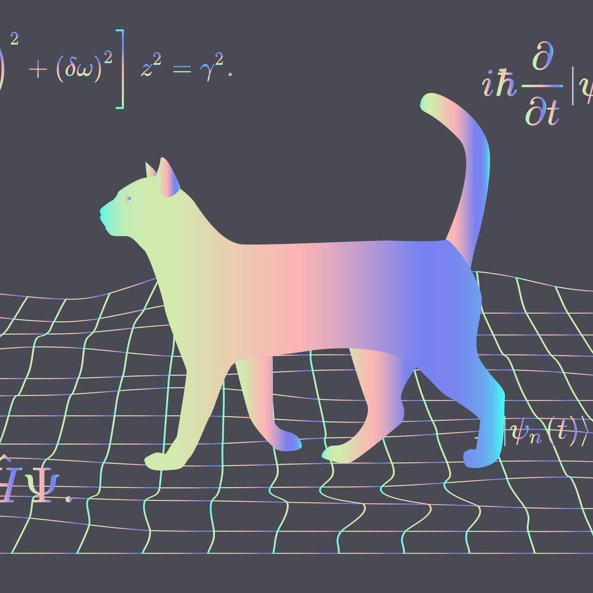

Welcome to my Project Website!

Schrödinger's Cat :
In 1935, the Austrian-Irish physicist Erwin Schrödinger wrote:
"One can even set up quite ridiculous cases. A cat is penned up in a steel chamber,
along with the following device (which must be secured against direct interference
by the cat): in a Geiger counter, there is a tiny bit of radioactive substance, so
small, that perhaps in the course of the hour one of the atoms decays, but also,
with equal probability, perhaps none; if it happens, the counter tube discharges
and through a relay releases a hammer that shatters a small flask of hydrocyanic acid.
If one has left this entire system to itself for an hour, one would say that the cat still
lives if meanwhile no atom has decayed. The first atomic decay would have poisoned it. The
psi-function of the entire system would express this by having in it the living and dead cat
(pardon the expression) mixed or smeared out in equal parts."
Source: Wikipedia